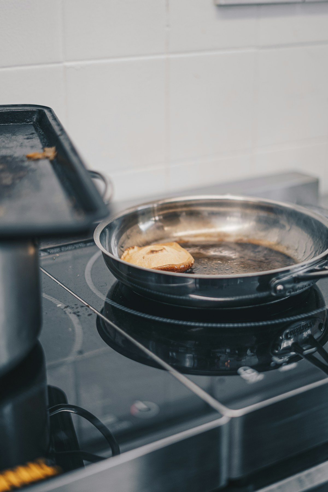

Pannensets & kiezen
Welke pannen heb je écht nodig in een huishouden?
Een fijn uitgeruste keuken hoeft geen volle keukenkast te betekenen. Begin met wat je vaak kookt en kies daarna pas je pannen.
3 min leestijdLees de gidsGoed gerei. Goed gevoel.
Van je eerste pannenset tot die ene fijne koekenpan. Ontdek welk kookgerei bij jou past, met heldere uitleg en eerlijk koopadvies.
Geen eigen tests. Wel duidelijke afwegingen.

Eerst jouw keuken. Dan de juiste pan.
Pannensets & slimme keuzes
Welke pannen passen erbij?
Vind een fijne koekenpan
Vers uit de gids
Ruimte voor wat ertoe doet
Het aanbod is groot. Maar jouw avondeten vraagt meestal om iets heel eenvoudigs: een pan die past bij je kookplaat, je gerecht en de tijd die je hebt.
Daar beginnen we. Met jouw keuken als uitgangspunt en begrijpelijke uitleg als hulpmiddel.
Maak kennis met KookgereigidsOp zoek naar iets specifieks?
Even helder
Geen kleine lettertjes over onze werkwijze. Gewoon weten waar je aan toe bent.
Zo maken we onze gidsenNee. We baseren onze uitleg op productspecificaties, openbare bronnen en gebruikersreviews. We maken duidelijk onderscheid tussen wat een fabrikant opgeeft en wat anderen ervaren.
Dat hangt af van je kookplaat, je gerechten en wat er al in je kast staat. Begin met een lijstje van wat je mist. Onze keuzehulp helpt je dat overzicht te maken.
Via affiliate-links kunnen we een commissie ontvangen. Dat kost jou niets extra. Je leest meer over onze aanpak bij affiliate-links en onafhankelijk kiezen.
Begin bij jouw kookgewoonten. De juiste pan volgt vanzelf.